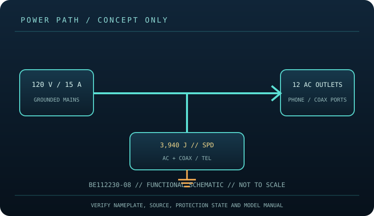

[ SURGE PROTECTIVE DEVICE // STATIC REFERENCE ]
Belkin 12-Outlet Surge Protector BE112230-08
12 grounded NEMA 5-15R outlets, 3,940 J, 8 ft cord; model listing identifies phone/coax protection. This record describes the named model only; verify nameplate, region, revision, approvals and current manufacturer instructions before deployment.

SAFETY SCOPE: Surge protective devices do not provide outage runtime, guarantee protection from every event, repair defective grounding, or replace qualified electrical installation. Capacity and topology below are based on the cited product literature; where a value is not published, it is not guessed.
Model specifications and topology
| Manufacturer / exact model | Belkin BE112230-08 — named North American model; revisions and region-specific suffixes must be checked on the actual label. |
|---|---|
| Class / topology | Cord-connected, point-of-use multi-outlet surge protective strip. Belkin lists AC receptacles plus telephone and coaxial line protection; internal component topology is not inferred here. |
| Electrical capacity | 120 V AC, 15 A maximum (1,800 W at nameplate conditions), 60 Hz; use only on a correctly grounded North American 120 V branch circuit. Confirm the exact label and cord before use. |
| Surge rating | The manufacturer rates this model at 3,940 joules of surge-energy dissipation. Joules describe the stated surge rating, not continuous load capacity, protection lifetime, or a guarantee against every transient. |
| Outlets / connection interface | Twelve grounded NEMA 5-15R AC receptacles, including six standard and six BlockSpace positions; 8 ft cord. This listing’s model-specific support page identifies phone/coax protection. Match each signal cable to the labeled IN/OUT ports and service type. |
| Compatibility | Designed for grounded 120 V North American equipment with a NEMA 5-15P plug. Keep combined load within 15 A and within the appliance and circuit ratings. Phone/coax paths apply only to compatible lines connected as labeled; neither port converts a signal or protects equipment on an unconnected path. |
| Battery / runtime | No battery or stored-energy runtime. This product cannot ride through an outage; connected loads lose power when the source or device disconnects. |
| Monitoring / lifecycle | Use only the model’s labeled indicators, alarm, breaker or status display. These features are not proof of building-ground integrity; check manufacturer replacement/failure instructions. |
| Installation / revision control | Read the full model-specific manual and nameplate before installation. Match voltage, phase, current, connector, signal-line type, enclosure rating, revision and approvals; similar product-family names are not evidence of interchangeability. |
Compatibility and application
Designed for grounded 120 V North American equipment with a NEMA 5-15P plug. Keep combined load within 15 A and within the appliance and circuit ratings. Phone/coax paths apply only to compatible lines connected as labeled; neither port converts a signal or protects equipment on an unconnected path.
Cord-connected, point-of-use multi-outlet surge protective strip. Belkin lists AC receptacles plus telephone and coaxial line protection; internal component topology is not inferred here.
Confirm the equipment input-voltage range, connector type, circuit capacity and signal path from both equipment manuals. A higher joule number does not increase the permissible connected load and does not, by itself, define clamping behavior or protection lifetime.
Safety, inspection and limits
- Do not exceed the 15 A nameplate or use with ungrounded, damaged, wet, or outdoor installations unless the exact model is specifically rated for that environment. Do not series-connect surge strips or defeat grounding. A status light is not proof that the receptacle grounding is correct or that protection remains effective.
- Inspect housing, plug, cord and protection/ground indicators; retire a damaged unit or one whose protection indicator reports failure. A surge strip does not supply outage runtime. Never open it or treat a reset/indicator as authorization to exceed the load rating.
- Surge protection reduces specified transient exposure but cannot guarantee equipment survival from lightning, wiring faults, sustained overvoltage or every conducted path. Follow the model manual and applicable electrical code.
Manufacturer sources and safety references
- Belkin — BE112230-08 product overviewManufacturer support page for this 12-outlet, phone/coax model and its listed features.
- Belkin — BE112230-08 FAQModel-specific support answers and setup information; verify the product label for regional/revision details.
- NFPA — NFPA 70 (National Electrical Code)Electrical installation and grounding requirements depend on the adopted local code.